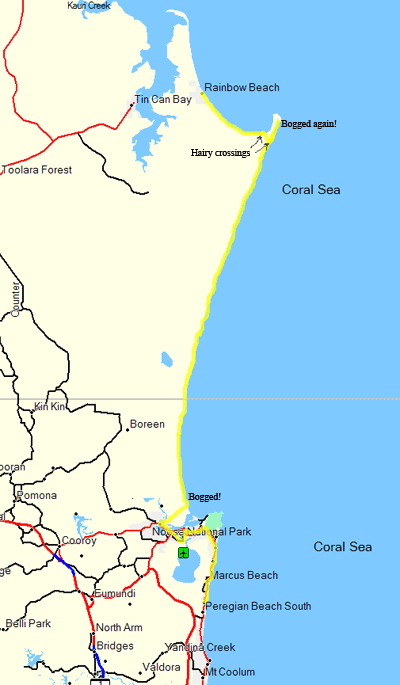

2/5/2005
You are here: Home > Travelogues > Nerd's Eye View > 2/5/2005Onward
{kind=link}
Here I am again... taking up the story from before, I left the Peregian and headed towards Rainbow beach.
It was a nice place to stay though. Everyone I met has been very friendly and pleasant. My closest neighbours were all nice.
Nearest was a guy called Chris who is a mad windsurfer (Carl, he really reminded me of you for some reason; his manner more than anything else - the long ocean stare hey ;)).
He showed me some photos of him doing summersaults in the surf. He also turned out to be the brother of the Oz Cable Guy (http://www.ozcableguy.com), if you've heard of him. Small world.
We had an amusing nerd session in the caravan park, hooking up our laptops with Bluetooth so I could fix him up with Quicktime (to let him view his mobile phone videos). He was most appreciative.
I also left a burned cd of some perfectly legal software for him, figured he'd appreciate it.
Another, older fellow and I bonded almost immediately with our shared hatred of John Howard and the way this country, and it's people, have become in recent years. I have a feeling that Johnny and Dubya are not the most popular people in these sorts of places.
During my travels I shall endeavour to find some of the people who actually voted for Howard - because buggered if I can now, or have been able to to date (barring one or two people on this mailing list whom I shall not name - yet! ;)).
It's been nice though, as it's made me feel a lot more comfortable about leaving my stuff around in places like this. It's a pain to tie up my bike all the time, and it's much nicer to trust people. Besides, no one in their right mind will steal my bike, unless they are my size or bigger, as they'd just end up cracking their ging gang goolie goolies on the enormous frame (for those who haven't seen my bike, it's the size of a cow).
I've also seen the Hitch Hiker's movie now. Suffice to say that I think
everyone is being a bit too kind about it. Maybe I am just a raving
loony extremist nerd fan, but I have to say... Yanks just don't get it.
They took a loose plot used to drive sketch comedy and tried to make it
a proper movie, which is fine, but they also cut half the jokes, ruined
the other half and added some lame ones of their own. Which is not ok.
Anyway, enough with the ranting and back-story. I had my first adventure on the way to Rainbow beach.
There are two ways to get there basically, one is a long roundabout road, and the other is to drive along the coast, basically along a beach for about 50kms.
Wasn't sure if my car would be up for it (it is 4WD, but it's not A 4WD), so I spoke to the folks at the National Parks permit place, who reckoned it would be fine with my car, provided I went a low tide and so on. No worries, she'll be right mate.
So I got the times for the tides, and caught the ferry over the river.
The tide was still coming in so I had a beer and killed a little bit of time a local pub there. There were Mynah birds flying around inside the pub, one was at the bar for a while staring at various bottles, I think trying to work out whether it wanted a Jack Daniels or not. I didn't get a photo though as it buggered off fairly quickly.
Then I set off for the beach. The idea was, drive on, drive up to the headland, drive overland briefly to skip the rocky point, and then drive up the beach on the other side to the town.
I foolishly followed a couple of 4WDs onto the beach without scouting it out, and rapidly became aware of the fact that a) they weren't going fast so I couldn't keep my momentum up, and b) the sand was too soft and my car no longer had clearance. So I got bogged with 1 minute. Great.
I flagged down an older couple in a 4WD; they kindly rescued the poor city boy, and towed me out onto the hard sand. After that all was well. I drove up the beach for a good hour, stopped at a place called Red Canyon, some eroded sands full of iron oxide basically, and got some snaps (see attached).
There is a camping area on the beach, with no-camping areas on either side. The camping area was packed, worse than usual due to the long weekend. There were 4WDs everywhere.
I should take a moment to point out that all this is kind of foul really. Driving on beaches is not the most environmentally sound idea, and I find it quite odd actually that National Parks and Wildlife allow it, as the area is basically one big national park.
Of course, I was part of the problem myself, wasn't I.
I suppose I was just curious to do it, and it seemed a more interesting road to travel (and it is officially a road - with a speed limit of 80). It feels fouler in hindsight, and it's not something I feel the need to do again.
Also, I now know where all those yuppies with their urban monsters go, with their broods, on long weekends. And somehow they still manage not to get mud on them.
So, having alienated a certain proportion of this mailing list (hey you all knew you were subscribing to a certain amount of pontification), I should get on with the story.
I got up to the end of the beach, actually missed the turnoff to the overland track, and had to double back. After getting bogged again. In really shallow dry sand. Oh the embarrassment, but it serves me right.
It was only a minor bog this time though, and 5 guys appeared and immediately pushed me out without even having to ask, thankfully before I managed to set fire to my clutch.
My experiences with the evil dry sand had therefore made the crossing onto the track look a lot harder now. After scouting it out on foot, I picked some promising looking ruts and charged – victory!
Once I got to the other end of the short overland track, I faced the same dilemma – unfortunately this time the wet sand strip on the far side of the mush was much smaller, so I waited for the tide to go out a bit more (rather than risk charging headlong into the ocean, which would have been a Bad Look indeed).
I helped push some other guys out while I waited, it was nice to see people with actual 4WD vehicles can get stuck too. They took a look at my car and said "you made it to here in THAT?!"
This crossing actually looked a lot hairier than the last, so I was pretty pessimistic about my chances, even after my previous success, but eventually I picked a path and charged, and made it.
There were plenty of people round each time anyway, and I could have gotten towed out, but it would have been rather embarrassing. Once on the dry I was fine all the way back as the tide was out. I've since seen photos of what happens to cars that get stuck here when the tide comes in - they basically get smashed to pieces on the rocks. Nice!
So all in all it was probably not the most sensible (practically or environmentally) way to have gone, but it was a valuable learning experience. Better to find out how easily my car gets bogged when surrounded by people with tow ropes, than to find it out on some desert track miles from nowhere (and yes this means I that shall be avoiding said desert tracks :))
Now I've parked myself at the local caravan park, it's fine but the mozzies are a bit nasty here. I'll hang for a day or two and investigate the possibility of doing some diving. If it looks promising I'll do that, if not I'll just head on, in the general direction of the exciting metropolis known as Bundaberg.
Once again, I hope all is well in your worlds. I've had some requests for a pic of the fully armed and operational vehicle, so they're attached too. James - the platform is working fabulously, thanks again so much for the help.
Thanks also go to Alan who just happened to be round when I desperately needed an SMTP server, and he kindly obliged within seconds.
All images in this gallery:
{kind=link}
{kind=link}
{kind=link}
{kind=link}
{kind=link}
{kind=link}
{kind=link}
{kind=link}
{kind=link}
{kind=link}
{kind=link}
{kind=link}
{kind=link}
{kind=link}
{kind=link}
{kind=link}
{kind=link}
{kind=link}
{kind=link}
{kind=link}
{kind=link}
{kind=link}
{kind=link}
{kind=link}
{kind=link}